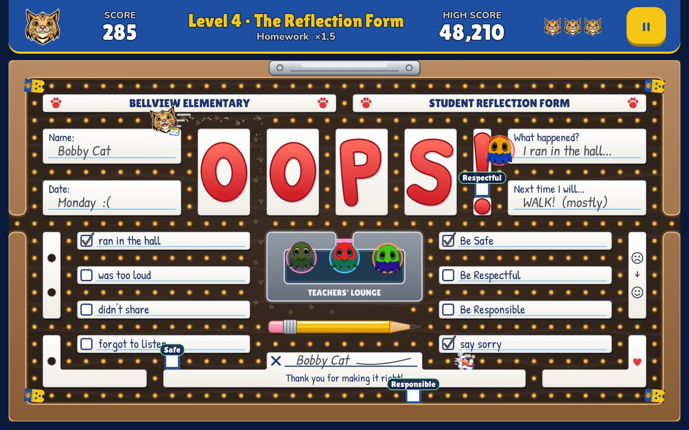
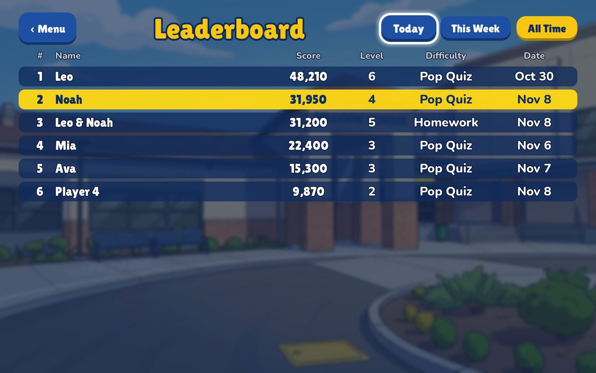

Maze of the Bobcats
Honička v bludišti, v hlavní roli rys Bobbie, vytvořená pro herní automat na škole Bellview Elementary v Ashlandu v Oregonu. Sněz všechny tečky, seber Bobcat Tickets a buď vždycky o krok před učiteli!
Pro školu Bellview Elementary Herní automat · Joystick a tlačítka


Do toho, Bobcats!
Šest školních bludišť
Morning Bell, Math Class, Library, The Reflection Form, Lunch & Recess a Homework Time: každé je nakreslené jako jiný kout školy.

V každém bludišti něco navíc
Zvonek, který posílá učitele zpátky do sborovny, čísla, která musíš sníst popořadě, tiché zóny, kde tě učitelé nevidí, banánové slupky a další.
Bobcat Tickets
Seber Bobcat Ticket a učitelé utíkají do sborovny. Chyť je cestou a získáš spoustu bodů!
Skuteční učitelé jako přátelská strašidla
Škola si může přidat vlastní učitele jako kreslená strašidla a každý z nich řekne něco vtipného, když tě chytí. Jejich obrázky zůstávají v automatu a nikdy se nedávají na internet.

Školní vylepšení
Hall Pass, se kterým proklouzneš kolem učitele, Recess Bell, který je zmrazí, rychlé Sneakers a Pizza Friday, kdy má každá tečka dvojnásobnou cenu.

Album samolepek
15 samolepek za zábavné kousky, třeba když projdeš bludiště a nikdo tě nechytí. Na konci hry napiš své jméno a samolepky ti zůstanou.

Žebříčky
Nejlepší skóre dne, týdne i všech dob, takže každý den je tu nový šampion.

Jeden nebo dva hráči
Hraj sám, nebo s kamarádem: střídejte se, každý ve svém bludišti, hrajte jako tým v jednom bludišti, nebo hrajte spolu najednou, každý se svým joystickem.

Vytvořeno pro herní automat
Joystick a velká arkádová tlačítka, pět obtížností od Recess po Principal's Office a ukázková hra, která běží, když nikdo nehraje.
Obrázky ze hry








Jak hrát
Sněz každou tečku. Řiď Bobbieho joystickem (nebo přejetím prstem po obrazovce) a sněz všechny tečky, abys bludiště dokončil. Občas se objeví pamlsek za body navíc.
Pozor na učitele. Když Bobbieho chytí učitel, přijdeš o život. Každý učitel tě honí po svém a postupně jsou rychlejší a chytřejší.
Obrať to. Sněz Bobcat Ticket v rohu a učitelé utíkají zpátky do sborovny. Chytej je cestou: každý další v řadě má větší cenu.
Projdi všech šest bludišť a začni 2. kolo, o něco rychlejší. Jak daleko se dostaneš?
Maze of the Bobcats vznikla jen pro herní automat školy Bellview Elementary, takže se nedá stáhnout. Hra je v angličtině.